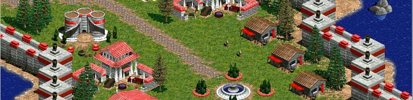
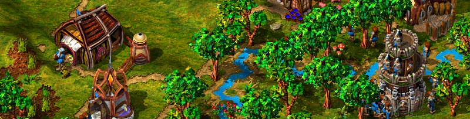
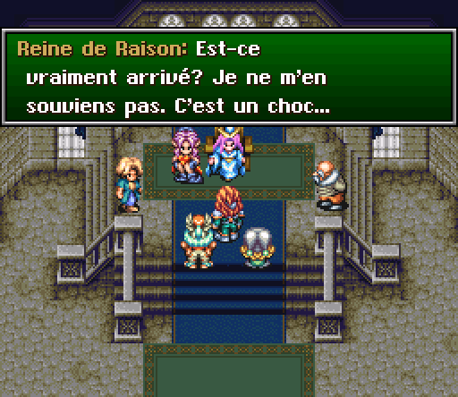

Je n’écrirai pas l’article de ce mois-ci. Vous allez le faire. Ou plutôt, vous l’avez déjà fait.
Quelques années après l’article « Vilain Game Designer ! Pas de biscuit pour toi ! », j’avais demandé aux lecteurs de m’écrire au sujet de ce qui les irritait dans les jeux, et hiiiiiiiii ! qu’est-ce que j’ai reçu comme lettres ! Voici donc une liste des erreurs de conception et des causes d’énervement envoyées par de nombreux lecteurs. J’essayerai de rendre à César ce qui est à César quand je le peux, mais certains n’utilisent pas leur vrai nom et je ne peux dans ce cas malheureusement rien faire.

Lire la suite
ou
les 4 commentaires
Bon, cela fait presque deux ans que le dernier article « Vilain Game Designer ! Pas de biscuit pour toi ! » est paru, je pense donc que l’heure est venu pour un nouvel article. Je tiens à jour une liste de mauvaises fonctionnalités, d’erreurs de conception et de choses qui m’irritent personnellement dans les jeux vidéo auxquels je joue, et elle maintenant assez longue pour être publiée. Certaines d’entre elles sont des erreurs de level design ou même des faiblesses dans la programmation, mais il s’agit au moins toujours de choses sur lesquelles le game designer a une influence.

Lire la suite
Je suis vraiment fatigué du battage médiatique.
L’une des façons dont un développeur de jeux passe de « jeune et innocent » à « cynique et blasé » est une exposition prolongée au déluge irréfléchi de superlatifs qui sort de la machine des relations publiques. Au bout d'un moment, tout sonne pareil et vous réalisez que vous ne pouvez plus rien croire.
Je suppose que dans une certaine mesure, le battage médiatique est inévitable dans notre industrie et plus généralement dans toute industrie du divertissement. Comme il y a peu de critères objectifs pour tester les jeux, le fait d’aimer ou de ne pas aimer un jeu se réduit à un problème d’opinion. Le battage médiatique est notre façon d’influencer l’opinion de nos clients. Et certaines de ces déclarations qui semblent complètement extraordinaires sont justifiées. Les jeux sont beaucoup plus rapides, beaucoup plus fluides et beaucoup plus beaux qu’ils ne l’étaient. Avec le développement du hardware à l’heure actuelle, il est difficile de trouver une façon de décrire ces changements qui ne sonne pas comme une successions d’hyperboles. Néanmoins, je pense que le battage médiatique représente un véritable danger pour le processus de développement.
Lire la suite
Selon le mythe de la création de l'univers fantastique de J.R.R. Tolkien, la terre a été dessinée par la musique. Eru, l’Elu, créa plusieurs esprits appelés les Ainur, qui chantaient devant lui. Mais il y eut des conflits entre les Ainur au sujet de quel thème devait dominer et on en essaya plusieurs. Finalement, Eru arrêta la musique d’une seule et vibrante note, et il révéla aux Ainur ce que leur chant avait fait en réalité – il avait formé une vision de la terre et de toute son histoire. Puis, avec un mot, Eru fit de la vision une réalité.

Le mythe de la création de Tolkien fait inévitablement penser à la Neuvième Symphonie de Beethoven, à tel point que je demande parfois si Tolkien n’a pas été inspiré par celle-ci. La Neuvième Symphonie est composée de cinq mouvements. Dans les trois premiers, l’orchestre explore trois thèmes très différents. Mais dans le quatrième mouvement, une conversation prend place entre les violoncelles, qui sont clairement un professeur, et les violons, qui sont les élèves. L’un après l’autre, les violons commencent à joueur chacun les thèmes des trois premiers mouvements. A chaque fois, les violoncelles les interrompent et désapprouvent vivement. Finalement, les violons introduisent timidement un nouveau thème. Les violoncelles les encouragent et le thème prend de l’ampleur jusqu’à devenir l’éclatant Hymne à la Joie qu’est le cinquième mouvement.
Lire la suite
ou
les 7 commentaires
L’un de mes jeux favoris — du moins quand il s’agit de discuter les principes du game design — est le Monopoly. C’est un jeu où interviennent à la fois l’expérience et la chance ; il est facile de comprendre comment les ressources y circulent ; et il a l’avantage d’être connu par presque tout le monde dans le monde occidental. Quand je me sers du Monopoly comme exemple, je suis presque sûr que les personnes qui me lisent sauront de quoi je parle. Les noms des rues diffèrent selon le pays où vous y jouez, mais les principes restent les mêmes.
Le Monopoly est une version simplifiée du marché immobilier – simplifiée, parce que toutes les subtilités du vrai marché immobilier n’y ont pas été incluses. Il n’y a pas d’inspections, d’assurances ou d’impôts. Monopoly ne garde que les aspects amusants du commerce immobilier, et met de côté ceux qui ne le sont pas.
Lire la suite
Il y a à peine deux ans, j’ai écrit un article intitulé « Vilain Game Designer ! Pas de biscuit pour toi ! » qui traitait de ce que je considérais comme des fautes de conception – des choses qui m’irritaient dans certains jeux vidéo. Celui-ci a déclenché un important afflux d’e-mails, la plupart disaient « Oui ! Moi aussi ! », mais d’autres faisaient remarquer que j’avais été injuste par moments. Dans tous les cas, il s’agissait d’un thème populaire (et potentiellement sujet à débat) et j’ai donc commencé à établir une liste de choses qui m’irritaient dans les jeux. J’en ai cinq sous la main, et plus pour lesquelles je n’ai plus de place, c’est pourquoi le temps est venu pour un « Vilain Game Designer ! Pas de biscuit pour toi ! II ». Il s’agit pour certaines d’erreurs de programmation et non de design, mais vous avez saisi l’idée.

Lire la suite
ou
le commentaire
La plupart du temps, cette chronique est remplie de notes dogmatiques sur la créativité, la narration ou les effets sociologiques du divertissement interactif – en d’autres termes, la pluie et le beau temps. De temps à autres néanmoins, je me sens obligé d’écrire quelque chose d’abstrus et de technique sur le game design, quelque chose qui relève plus du « comment » plutôt que du « pourquoi » ou du « pourquoi-ne-pas ». Là il s’agit de l’un de ces moments. Ce mois-ci, je vais vous parler des effets que la rétroaction positive a sur l’équilibre d’un jeu.
Lire la suite
ou
le commentaire
La culture gothique, à ce qu’il me semble, est un peu passée à côté de son sujet. Le fard à paupières et les romans d’Anne Rice, c'est très bien tout ça, mais si vous êtres vraiment intéressés par la mort, je vous suggère d’aller travailler à la morgue de la ville le samedi soir, quand les victimes de tirs de balles arrivent. Là vous pourrez expérimenter la sordide vérité dans de bonnes conditions d’éclairage : les corps sont souvent encore chauds et les familles en sont à cette première phase d’incrédulité choquée qui précède la longue tristesse à venir. La mort violente n’a rien à voir avec des vêtements noirs à la mode ou des joyaux hérissés de pointes : il s’agit principalement de colère et de misère sordide, de brutalité et de mauvais jugement. Néanmoins, malgré leur vision romancée, je pense que les Goths ne sont pour la plupart pas bien méchants. Un peu de jeu théâtral ; un peu d’autodramatisation ; ça énerve leurs parents (ce qui constitue sans doute une grande part de l’intérêt de la chose) mais ce n’est intrinsèquement pas plus sinistre que de s’habiller avec des costumes de Star Trek. Des cultes de la mort sont apparus de nombreuses fois dans l’histoire humaine, des momies de l’ancienne Egypte aux soldats d’argile enterrés en Chine. Porter du vernis à ongles violet est en comparaison une expression assez douce d’une très ancienne pulsion.
Lire la suite
ou
les 2 commentaires
L’article du mois dernier sur les jeux d’aventure a déclenché une si forte réaction que j’ai pensé discuter d’un important problème qui y est lié, pendant que j’ai l’attention de tout le monde.
La narration interactive est un sujet de débat très important depuis que les premiers jeux vidéo ont été créés. Beaucoup des premiers développeurs de jeux étaient des programmeurs sans expérience dans le domaine de l’écriture d’une fiction, si bien qu’il y avait une véritable pénurie de talents pour créer des éléments comme les personnages et pour rythmer une intrigue. Depuis lors, les écrivains professionnels sont entrés dans l’industrie et la qualité de notre narration a quelque peu augmenté.

En dépit de ça néanmoins, il reste une question philosophique plus vaste qui se dessine au-dessus du sujet : « Qu’est-ce que cela signifie quand on dit qu’une histoire est interactive ? ». C’est une question qui reste aujourd’hui sans réponse. Vous pourriez avancer qu’aucune réponse n’est nécessaire – les jeux d’aventures racontent des histoires et ils sont interactifs, par conséquent ils constituent une narration interactive, et il n’est pas nécessaire d’en discuter plus avant. Le problème est que la plupart des jeux d’aventure racontent des histoires plutôt pauvres. Nous n’avons jamais eu jusqu’ici vu de jeux d’aventure qui était du niveau des travaux de Dickens ou de Maupassant.
Je crois que la narration interactive souffre de trois très gros problèmes et ceux-ci sont clairement visibles dans les jeux d’aventure aujourd’hui.
Lire la suite
ou
les 2 commentaires
Les plus observateurs d’entre vous auront pu remarquer que je n’ai pas publié d’article le mois dernier. J’étais en vacances à Oxford, en Angleterre, où j’étudiais l’art, l’architecture, l’histoire et la sociologie de la maison anglaise. Vous vous demandez sans doute pourquoi un développeur de jeux PC voudrait être capable d’expliquer la différence entre décorations baroque et rococo ou pourquoi un libéral voudrait étudier les extravagantes propriétés d’un groupe de gens qui ont vécu des vies de dépenses ostentatoires tandis que les classes ouvrières opprimées trimaient au loin dans la chaleur… Où en étais-je ? Bien, de toute façon, pour faire court, la réponse est que si les développeurs de jeux n’apprennent pas quelque chose de nouveau de temps en temps, la totalité de l’industrie du jeu finira dans le pétrin, voilà pourquoi.

Lire la suite